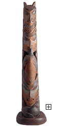

|

|
|

Haida Totem Pole,
after 1850, wood, malacite, pigments, Gift of George Rickey, Minneapolis Institute of Arts, 97.169.1 |
The wealthy Native people of the Northwest Coast developed complex social and
religious systems and acquired remarkable artistic skills. Men were particularly noted for
their carving skills and women for weaving. Although many ceremonial and religious objects
were created, most objects were made for the express purpose of proclaiming the wealth and
status of important families. The most famous of the many Northwest Coast art forms is the
totem pole. Bearing animal crests, the carved totem stood before a planked house in a seaside
village, proclaiming the ancestry of its owners.
|
| |
The Potlatch
Although everyone participated in the accumulation of wealth, the principal property
owners among the Northwest Coast people were chiefs and nobles. These wealthy people were
obligated to give away their material goods in elaborate ceremonies called
potlatches,
which were held in the winter to celebrate a special event, like a wedding or birth. The
measure of a man's prestige in Northwest Coast society was the quantity of possessions he
had to give away. But the potlatch was more than an opportunity to display wealth and
enhance one's status. It was also a means of redistributing wealth within a stratified
society.
More about the Northwest Coast Indians.
|